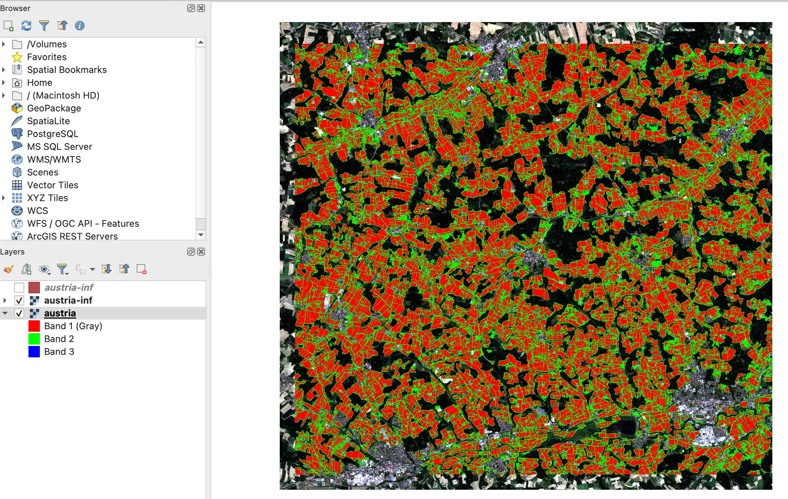

The fastest way to run FTW field boundary detection is in your browser — no install, no code. Draw a region anywhere on the map, pick a model, and the app runs inference on Sentinel-2 imagery for that area. Results download as GeoParquet or GeoJSON for use in any GIS. The web app runs the same FTW baseline models as the command-line workflow below.
Tutorial: Run the FTW Baseline model (command line)
This tutorial walks through downloading a pair of Sentinel-2 scenes, running an FTW Baseline model on them, and producing fiboa-compliant GeoParquet output. It works anywhere in the world; we'll use a small area in Austria as the example. The video below shows the process end to end:
Downloading the Model
Grab a pretrained model from the FTW BaselinesReleases page. There are four checkpoints: two-class and three-class variants, each available in CCBY and FULL flavors. The two-class models predict field vs. non-field; the three-class variant adds an explicit boundary class, used during training but not exposed in the fiboa polygonization output.
The CC-BY models are trained only on data under CC-BY (or more permissive) licenses — use these if you need clean IP provenance. The FULL models use the entire FTW corpus; all of it is openly licensed, but includes share-alike and non-commercial sources. Per-dataset licensing is documented at the bottom of the FTW data homepage on Source Cooperative. You can also train your own models on a custom dataset subset — for this tutorial we'll stick with the pretrained ones.
Downloading the Data
Next, fetch a pair of Sentinel-2 scenes for the area of interest. The command below writes them to the current directory as austria.tif:
The result is an 8-band GeoTIFF: bands 1–4 are the RGB + NIR of the first (Window A) scene; bands 5–8 are the same for the second (Window B) scene. To pick your own scenes, use the Planetary Computer Explorer to find candidates in your AOI.
To choose the two timeframes (Window A and Window B), consult the USDA crop calendar for the planting and harvest windows of your target region. For example, the China calendar shows most crops planted Feb–May and harvested Aug–Nov. Use those months as filters in the Planetary Computer Explorer, set the cloud-cover threshold to 10% or less, and pick a clear observation covering the full AOI.
Pass --bbox to limit the download to a subset of the Sentinel-2 scene. Without it, the tool downloads the full scene, which takes much longer to fetch and run inference on. We chose a small area so results come back quickly.
Running the Model
With the data prepared, copy the downloaded model checkpoint into the current directory and run:
This writes the output to a GeoTIFF named austria-inf.tif. The --gpu flag selects which CUDA device to use (indexed from 0); omit it to run on CPU (much slower). On Apple Silicon, use --mps_mode to run on the integrated GPU.
The result should look something like this, overlaid on the original imagery in QGIS:

Producing Vector Output
Finally, polygonize the raster output into vector field boundaries:
ftw inference polygonize austria-inf.tif
This writes austria-inf.parquet, a GeoParquet file following the fiboa specification and including per-parcel area. The polygonization step is intentionally simple: it simplifies geometries to 15 meters (smoothing edges) and drops polygons below a minimum size threshold — both configurable via --simplify. Richer polygonization options are on the roadmap, and contributions are welcome. To write other formats (GeoJSON, FlatGeobuf, GeoPackage), pass --out with the matching extension.
If you hit a snag, file an issue describing where things went wrong and we'll help you work through it.
Summary
That's it — you've generated field boundaries from satellite imagery end to end. From here, try the other pretrained models, run inference on new areas, or train your own variant on a custom dataset subset. Results won't be perfect everywhere; improving coverage depends on feedback and contributions from a global community of users. If you've made it this far, we'd love to hear from you — start a discussion with your use case, results, or questions.